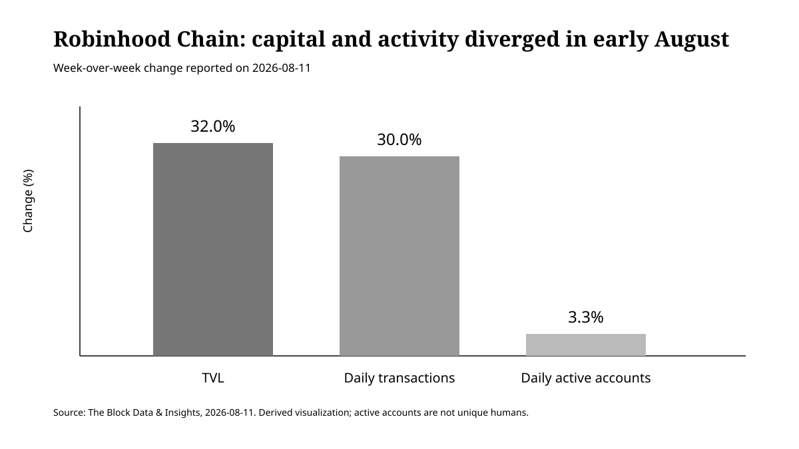
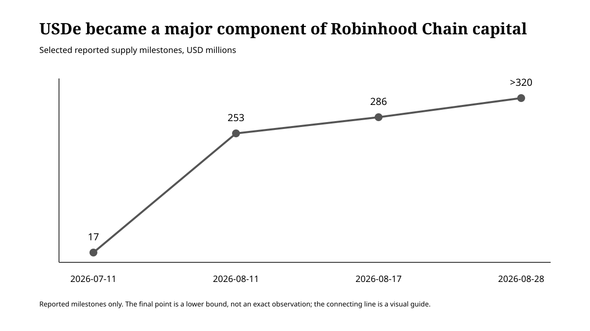

Summary
In the first half of August 2026, Robinhood Chain’s total value locked and transaction count rose sharply, while active-account growth lagged well behind. A weekly comparison published on 2026-08-11 showed TVL up 32% week over week and average daily transactions up about 30%, while average daily active accounts increased by only 3.3%. At that point, the data suggested that capital deployment and higher transaction intensity among existing or relatively few participants were moving faster than broad user expansion.
That pattern, however, did not persist unchanged through the end of the month. The latest daily data from growthepie showed roughly 9.8 million daily transactions and about 406,700 daily active addresses, while monthly active addresses had risen sharply from the very low base typical of a newly launched chain. The conclusion, therefore, is not that Robinhood Chain failed to attract users. A more defensible reading is that capital formation appears to have moved ahead of user growth in early August, with user activity beginning to catch up later in the month.
The concentration of capital nevertheless remains striking. A DefiLlama snapshot taken on 2026-08-31 showed approximately $718 million in chain-level DeFi TVL, about $775 million in stablecoin market capitalization, and a 57.63% USDG share. Morpho’s Robinhood Chain dashboard showed roughly $921 million in total deposits, $408 million in active loans, and $512 million in TVL. To understand Robinhood Chain’s growth, it is useful to separate two questions: how broadly the chain is being used, and how much capital has accumulated on it.
1. The divergence visible in early August
As of 2026-08-11, Robinhood Chain’s TVL stood at roughly $473 million, up 32% week over week. Average daily transactions reached 11.6 million, an increase of about 30%. Average daily active accounts, by contrast, grew only 3.3% and remained below their mid-July peak.
For that period, it is fair to say that TVL and user growth were not moving at the same pace. It would not, however, be justified to generalize from that observation and conclude that TVL growth on Robinhood Chain is structurally disconnected from user adoption.

2. Stablecoins changed the character of the capital base
USDe supply expanded rapidly over the same period. Around 2026-07-11, supply on Robinhood Chain was roughly $17 million. It was reported at approximately $253 million on 2026-08-11, about $286 million on 2026-08-17, and above $320 million by 2026-08-28.

The DefiLlama snapshot from 2026-08-31 showed total stablecoin market capitalization of about $775 million and USDG dominance of 57.63%. DefiLlama’s bridged-assets view separately showed around $437 million in USDG and $324 million in USDe. These are not the same metric: stablecoin market capitalization and bridged-asset balances use different aggregation semantics, so the two series should not be joined into a single time series.
USDG is officially positioned as the default lending asset used by Robinhood Earn. Deposited USDG is routed through curated Vaults into DeFi lending markets. USDe has also become a major collateral asset on Morpho. In other words, a substantial share of the dollar-denominated assets entering Robinhood Chain is not merely sitting as transaction balances; it is being placed into yield-bearing lending infrastructure.
3. Morpho shows the depth of the capital base
Morpho’s Robinhood Chain dashboard, checked on 2026-08-31, showed approximately $921 million in total deposits, $408 million in active loans, and $512 million in TVL. Collateral assets included not only USDe but also CASHCAT, SPY, NVDA, PLTR, MSTR, and AMZN.
The fact that can be established from these figures is straightforward: Robinhood Chain has built a large lending and collateral base. Whether that capital represents temporary parking or durable adoption cannot yet be established without more time-series evidence.
This article therefore tests the following hypothesis:
During the first half of August 2026, stablecoin inflows and capital deployment into lending markets on Robinhood Chain may have preceded the expansion of its user base.
If that hypothesis is correct, the next question is whether application usage eventually catches up—or whether capital leaves once incentives weaken.
4. Late-August data weakened the stronger version of the hypothesis
By the end of August, growthepie showed approximately 406,700 daily active addresses and about 9.8 million daily transactions. Monthly active addresses had also risen substantially from an extremely small initial base.
That makes the stronger claim—that the chain remained stagnant in user terms while capital simply accumulated—increasingly difficult to sustain.
The narrower and still testable hypothesis is this:
On a newly launched financial chain, stablecoin inflows and incentive-driven capital formation can occur first, with application usage and active addresses following later.
Robinhood Chain’s August 2026 trajectory may be one example of that sequence.
5. What would falsify the thesis?
The “capital arrived before users” interpretation should weaken if the following conditions are observed:
- Active addresses continue to rise after the TVL expansion.
- Stablecoin balances and Morpho deposits remain after incentives are reduced.
- Organic activity grows across Uniswap, Lighter, tokenized-stock applications, and other user-facing products.
- TVL becomes distributed across a broader set of uses instead of remaining concentrated in a small number of yield-seeking Vaults.
Conversely, if stablecoin balances and lending deposits fall sharply once incentives end, while active addresses fail to persist, the explanation of temporary capital parking would gain support.
Evidence / Sources
- DefiLlama, Robinhood Chain: accessed 2026-08-31. TVL approximately $718.24M, stablecoin market cap approximately $774.77M, USDG dominance 57.63%.
- DefiLlama, Robinhood Chain Bridged Assets: accessed 2026-08-31. USDG approximately $436.53M, USDe approximately $324.45M. This is not the same series as stablecoin market capitalization.
- growthepie, Robinhood Chain: latest daily data 2026-08-29. Daily transactions approximately 9.8M, daily active addresses approximately 406.7K, stablecoin supply approximately $747.91M.
- Morpho Network Data, Robinhood Chain: accessed 2026-08-31. Total deposits approximately $920.8M, active loans approximately $408.4M, TVL approximately $512.4M.
- Robinhood / Global Dollar Network: official materials describing USDG as the lending asset used by Robinhood Earn.
- The Block Data & Insights, 2026-08-11: TVL $473M, +32% week over week; average daily transactions 11.6M, approximately +30%; average daily active accounts +3.3%.
- The Block Data & Insights, 2026-08-17: TVL above $540M, stablecoins around $640M, USDe around $286M.
- Token Terminal milestone reported 2026-08-28: USDe supply above $320M.
Assumptions, limitations, and falsification conditions
- Addresses and accounts are not equivalent to unique human users.
- DefiLlama, growthepie, and Morpho use different metric definitions and snapshot times; values from different providers are not merged into a single time series.
- The 2026-08-11 divergence is reported through a secondary source, and Figure 01 visualizes those reported values.
- The 2026-08-28 USDe value is a lower bound of “above $320M.”
- TVL growth does not imply token-price appreciation, organic adoption, or future profitability.
- Continued catch-up growth in active addresses would further weaken the interpretation that capital accumulation led user growth.
- If capital remains after incentives decline and organic application usage continues to grow, “capital formation followed by adoption” becomes a better description than temporary capital parking.
Disclosure
This article examines market structure and does not constitute a recommendation to buy or sell any token, protocol exposure, or financial product.